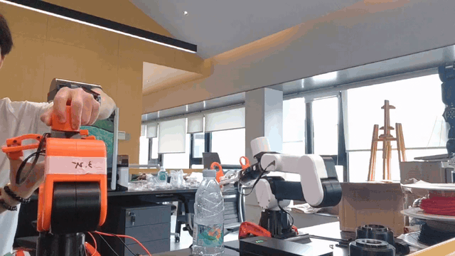
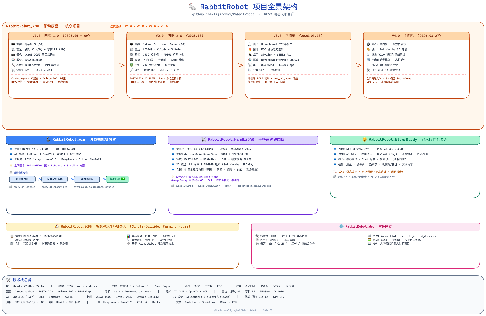
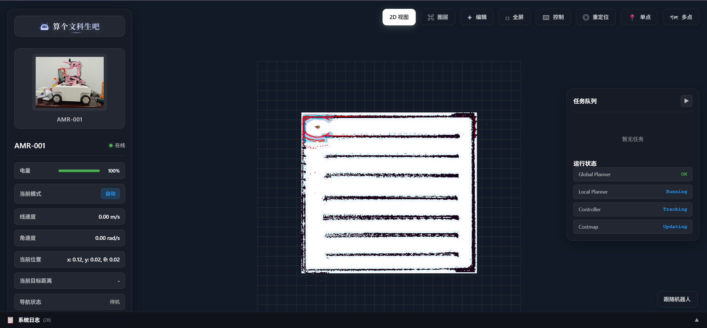
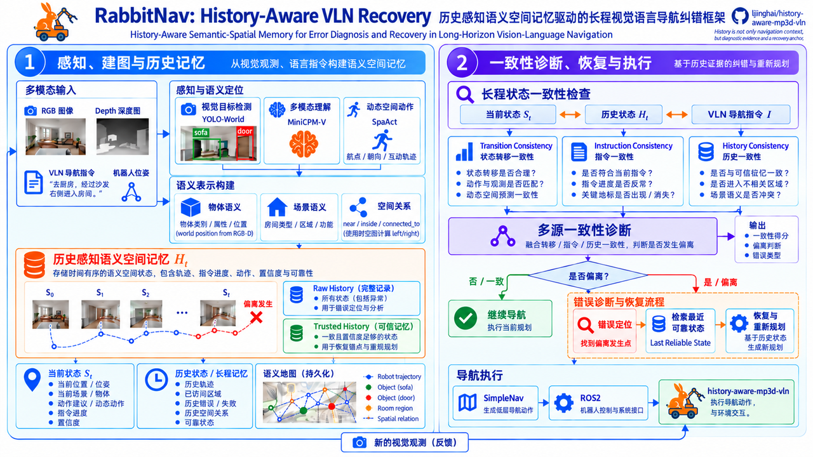

DAS Ego × UMI · 具身操作采集链
我完成 DAS Ego 与 UMI 的佩戴、配对和真实桌面双手操作，用第一视角观测关联末端轨迹、夹持变化与接触事件。当前正对齐视觉、姿态和动作时间戳，并整理可回放片段；VLA 示教与策略评估尚待开展。
技术细节
采集链：六路 RGB、约 270° 视野、六轴 IMU 与 MCAP 多模态记录。
整理重点：双手末端轨迹、夹持与接触事件的时间对齐和动作片段复盘。
从底盘与传感器集成，到导航、具身操作和实验工具：以下记录各项目的实现工作、验证范围与下一步。
我完成 DAS Ego 与 UMI 的佩戴、配对和真实桌面双手操作，用第一视角观测关联末端轨迹、夹持变化与接触事件。当前正对齐视觉、姿态和动作时间戳，并整理可回放片段；VLA 示教与策略评估尚待开展。
采集链：六路 RGB、约 270° 视野、六轴 IMU 与 MCAP 多模态记录。
整理重点：双手末端轨迹、夹持与接触事件的时间对齐和动作片段复盘。
围绕 10 轴主动关节完成双手台架联调与实机动作记录，接入 USB / CANFD 控制链。连续序列回放、关节反馈和异常停止仍待系统测试；后续计划融合视觉与设备的 400+ 触觉点，开展 VLA 操作评估。
双手实机台架：10 轴主动关节、USB / CANFD 通信与姿态配置。
触觉规格不等于融合验证：400+ 触觉点的采集、同步与 VLA 接入属于后续工作。
我将 Go2X 的 RGB-D 与里程计接入 MiniCPM-RobotTrack，以 31 帧历史生成 8 点轨迹。18 秒 Shadow（仅推理、不下发控制）样本完成 140 次推理，未记录模型或传感器故障；相机外参、深度保护与自主运动闭环仍待验证。
ROS 2 接入：RGB-D、里程计、rclpy 中继、rosbridge 与模型配置适配。
31 帧时序上下文 → 8 点轨迹；Shadow 验证期间底盘控制保持锁定。演示视频不作为模型自主行走的证据。

我完成 3D 打印机械臂装配与 CAN 通信联调，将 Python SDK、ROS 2 Control 和 MoveIt 2 接入真实关节反馈，处理方向、限位与轨迹执行约束。LeRobot pi0.5 正在接入调试；任务数据、成功率与策略评估尚待补齐。
硬件与控制：3D 打印装配、CAN / Python SDK、关节反馈与限位保护。
规划与研究：ROS 2 Control、MoveIt 2 / RViz；LeRobot pi0.5 的视觉—语言—动作接入仍在调试。

这份 2025 年工程档案保留底盘迭代、SLAM / Nav2、多传感器建图、Web 控制台与覆盖规划。重点记录 LiDAR、RGB-D、IMU 的数据接入和 TF 对齐，以及已知可通行区域内的路径检查；仿真跟随记录与真车执行证据分开呈现。
历史范围：AMR 原型、SLAM / Nav2、多传感器建图、Web 控制台与覆盖规划。
可复用环节：点云转占据栅格、已知区域裁剪、障碍膨胀、连通域分解与仿真跟随检查。

我通过 rosbridge WebSocket 将地图、激光、点云、路径、TF 与设备状态接入浏览器，并用 RViz 对照检查显示。已实现图层配置、2D/3D 切换、单点/多点导航接口、重定位、手动控制和日志回看；指令是否执行仍需核对机器人反馈。
界面实现：React 19、Three.js 3D 与 rosbridge WebSocket；显示 Nav2 / SLAM 状态。
调试重点：坐标系与 TF 对齐、图层配置、目标下发、状态回读和日志复盘。
从真实机器人遇到的问题出发，将方法、实验与尚未解决的边界一起公开。

2026 · Long-horizon Vision-Language Navigation
围绕长程 VLN 的偏航发现与可靠恢复，研究历史感知语义映射、空间一致性诊断与恢复锚点选择，目标是让导航行为可诊断、可恢复。
公开记录截至 2026-10-09：已开展 MP3D 受控回放与真机感知检查；仍有偏航漏检，CMA 对照未见导航指标增益。地图可靠性与恢复锚点未通过验收，真机自主恢复尚未验证。
硕士论文项目进行中 · 尚未发表长程视觉语言导航 研究历史语义地图能否帮助发现偏航，如何用空间一致性区分任务进展与误匹配，并选出值得回访的恢复锚点。
真实移动机器人系统 将底盘通信、传感器时间戳、TF 与导航接口放到同一条可检查的链路中，以实机反馈定位问题，积累可复现的失败案例。
建图与执行验证 关注地图几何、跨视角物体关联与位姿不确定性；分别检查感知输入、计划路径和实际轨迹，再判断恢复是否有效。
工具链： ROS 2, Nav2, SLAM, LiDAR, RGB-D, VLM / VLA, Web tools.
完成设备配对与桌面实操；数据对齐进行中
双手台架联调与动作记录；连续回放待验证
完成 Shadow 轨迹推理采样；运动控制保持锁定
实现浏览器调试与可视化入口
自建底盘与导航集成；完整自主导航待验收
实臂控制与规划联调；VLA 接入进行中
底盘、建图与覆盖规划工程档案